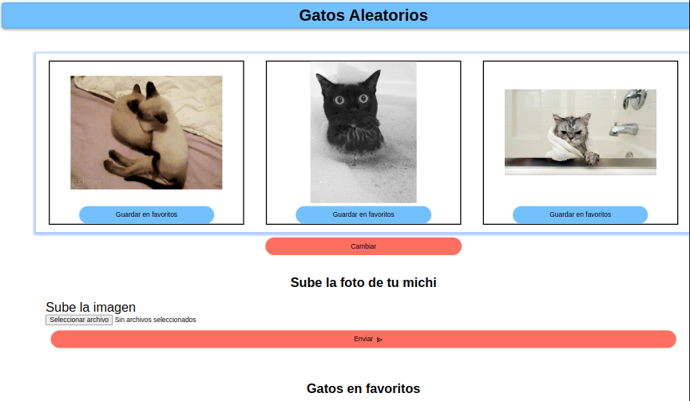
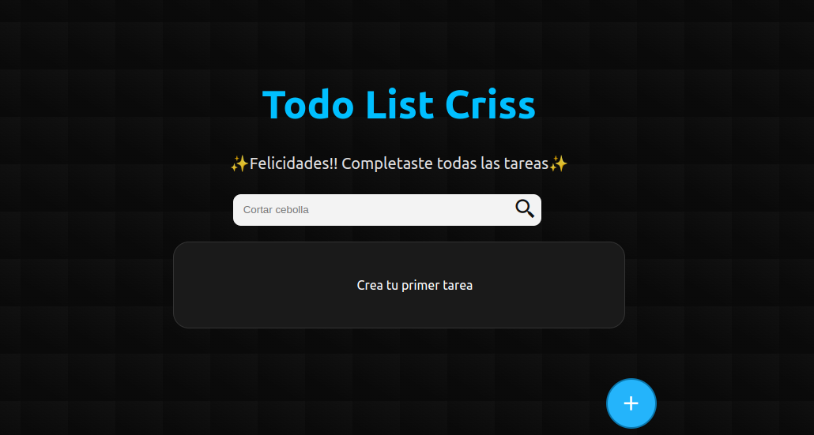
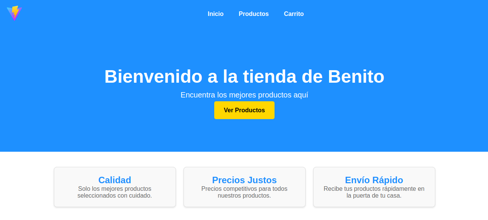
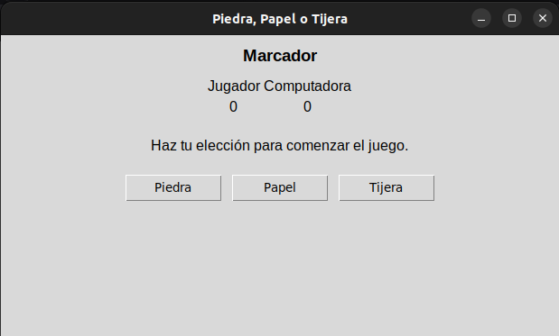
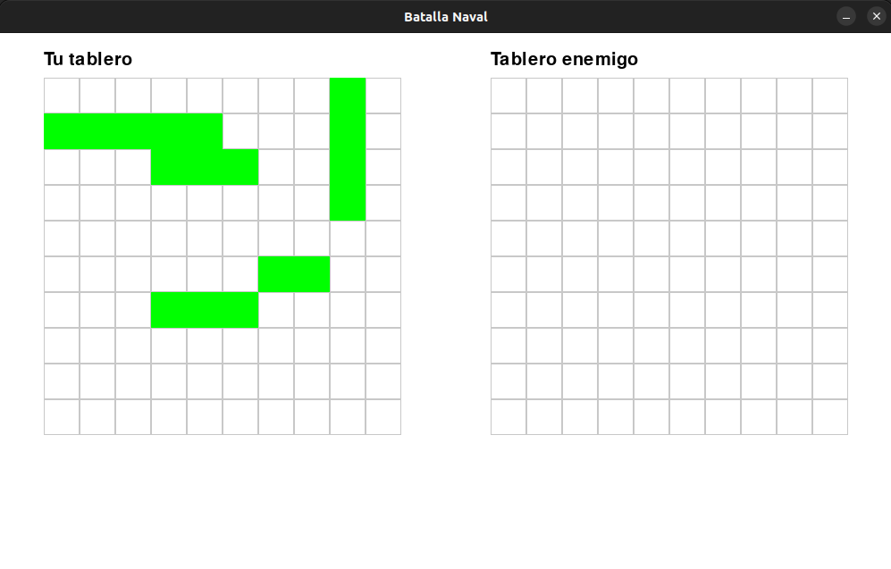

Cats Randoms
Este proyecto es una aplicación web que muestra imágenes aleatorias de gatos, utilizando la API
de TheCatAPI. Los usuarios pueden ver gatos
aleatorios, añadirlos a su lista de favoritos o
subir sus propias imágenes de gatos. Este proyecto fue desarrollado como parte del aprendizaje
de los cursos de Platzi.
Ver repositorio
Ver app

TodoList
Este proyecto es una aplicación web en React que te permite crear tareas, completarlas y
eliminarlas todo
esto guardado en el LocalStorage del navegador. Tambien tiene
un buscador para encontrar tus tareas. Este proyecto fue desarrollado como parte del aprendizaje
de los cursos de Platzi.
Ver repositorio
Ver app

Ecommerce
Este es un proyecto de eCommerce desarrollado con React que permite a los usuarios navegar por
productos, ver detalles de los mismos, filtrar por categorías, y gestionar un carrito de
compras. El objetivo es proporcionar una experiencia de compra interactiva y dinámica para los
usuarios.
Ver repositorio
Ver app

Piedra, Papel o Tijera
Este es un proyecto de un juego de "Piedra, Papel o Tijera" desarrollado en Python y empaquetado
como un archivo ejecutable para facilitar su distribución. El juego permite a los usuarios
enfrentarse a la computadora en partidas rápidas, con una interfaz simple e intuitiva. El
objetivo es ofrecer una experiencia divertida y accesible, integrando lógica básica de
programación y una presentación amigable para los jugadores.(Solo windonws)
Descargar juego

Batalla naval
Este es un proyecto de un juego de "Batalla Naval" desarrollado en Python y empaquetado como un
archivo ejecutable. El juego desafía a los jugadores a hundir la flota enemiga en un tablero,
utilizando estrategia y lógica para adivinar las posiciones de los barcos. Ofrece una interfaz
interactiva que permite disfrutar de partidas dinámicas y emocionantes. El objetivo es brindar
una experiencia de juego clásica con un enfoque práctico y accesible.(Solo windonws)
Descargar juego